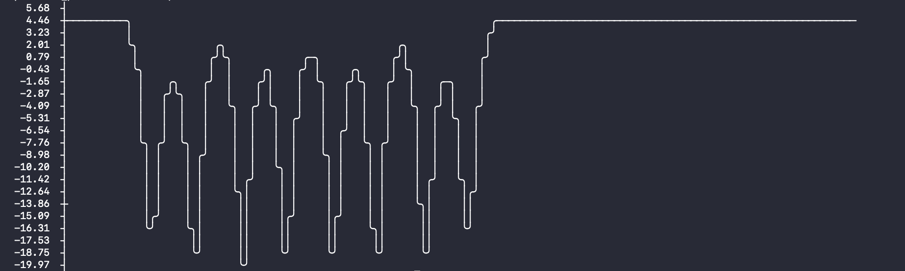
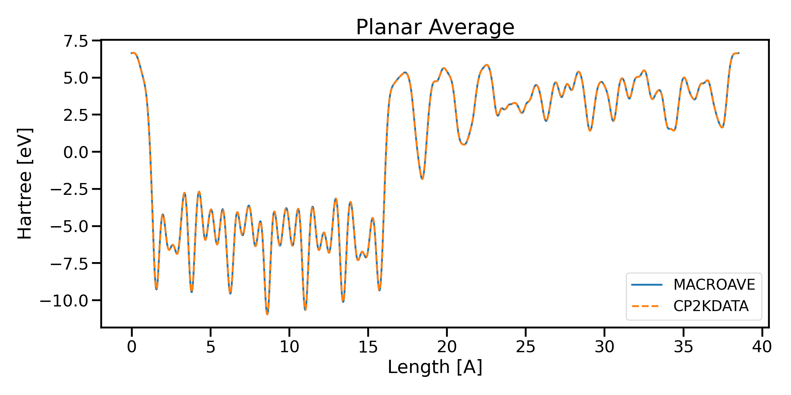
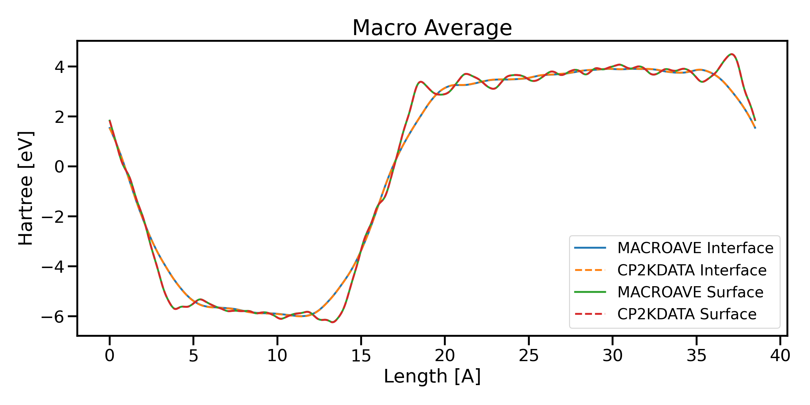

Manipulate CP2K Cube Files#
The CP2KData Python package provides tools for working with cube files generated by the CP2K software. One of the features of this package is its ability to handle CP2K cube files and perform various analyses.
Getting Started#
Import the necessary modules and load a cube file:
from cp2kdata import Cp2kCube
cube_file_path = "slab-ELECTRON_DENSITY-1_0.cube"
mycube = Cp2kCube(cube_file_path)
Retrieving Cell Information#
Users can easily obtain cell information from CP2K cube files by the following method
cell = mycube.get_cell()
type(cell)
As a result, you will get new object Cp2kCell
# output
cp2kdata.cell.Cp2kCell
Retrieving Structural Information#
CP2K cube files include structural information, making it easy to work with atomic structures. You can retrieve this information using the get_stc() method:
stc = mycube.get_stc()
The stc is ASE Atoms object
#output
ase.atoms.Atoms
Integration over space#
User can obtain the integration over the full unit cell using the get_integration() method, for example, if you get integration using density cube, you will get the total number electrons in this cube
mycube.get_integration()
#output
1152.0007910850024
The result is not exactly an integer. User should round it to integer manually.
Sometimes, we need to integrate over a certain area instead of the full unit cell.
One can use start_x, end_x, start_y, end_y, start_z, and end_z variables to define the desired range of values for the x, y, and z axes.
mycube = Cp2kCube("example.cube")
print(mycube.get_integration(start_z = 41.76))
print(mycube.get_integration(end_z = 41.76))
mycube.get_integration()
# output
0.8702837077294211
0.12970844915317598
Note that the integration by area is not applied to non-orthogonal cells.
Planar Averaging#
You can calculate planar average data from the cube file, both with and without interpolation:
# Get planar average data without interpolation
pav_x, pav = mycube.get_pav(axis="z", interpolate=False)
# Get planar average data with interpolation (4096 interpolation points)
pav_x, pav = mycube.get_pav(axis="z", interpolate=True)
Macro Averaging#
The get_mav() method allows you to compute macro average data with or without interpolation.
The method get_mav() is usually used for determining the electrostatic potential difference across two materials.[JCR07] Assume you have an atomic model of a heterojunction with SiO2 and Si with the interface normal to the z axis. You can specify the length of the first and second periodicity (l1 and l2) for SiO2 and Si. The periodicity can be determined from their interlayer distances normal to the z axis. In practice, it is recommended to set periodicity to double minimum interlayer distances to obtain better plateau in the bulk regions of the materials. The ncov means the types of systems. ncov=1 indicates one material with vacuum. In this case, l2 can be None. ncov=2 indicates two materials in the box, for example, the SiO2 and Si heterojunction. l1 and l2 are set to the periodicity of the two materials, respectively.
# Get macro average data without interpolation
mav_x, mav = mycube.get_mav(l1=4.8, l2=4.8, ncov=1, interpolate=False, axis='z')
# Get macro average data with interpolation
mav_x, mav = mycube.get_mav(l1=4.8, l2=4.8, ncov=2, interpolate=True, axis='z')
Addition and Subtraction of Cp2kCube#
Cp2kCube provides a convenient way to perform addition and subtraction operations on CP2K cube files, allowing you to manipulate the data contained within them. This method is extremly useful, if you would like to obtain the charge difference
from cp2kcube import Cp2kCube
# Load the first cube file
cube1 = Cp2kCube("path/to/cube1.cube")
# Load the second cube file
cube2 = Cp2kCube("path/to/cube2.cube")
# Perform addition of two Cp2kCube objects, the values of two cubes are added
result_cube = cube1 + cube2
# Perform subtraction of two Cp2kCube objects, the values of two cubes are subtract
result_cube = cube1 - cube2
The resulted object is a new Cp2kCube, with which, all above methods can be used.
Reduce Resulotion#
Cp2kCube can reduce the resolution of cube using reduce_resolution()method:
mycube.reduce_resolution(stride=2)
the argument stride is used to write the cube file (larger values result in larger grid spacing)
Writing Cube#
Cp2kCube can write data into a cube file with cp2k format using the write_cube() method:
mycube.write_cube("./test.cube")
With this command, you will obtain a new cube file under the current folder.
Quick Plotting#
Easily create quick plots of your data with the quick_plot() method. The method returns matplotlib figure object, with which, users can further manupulate the figure or save it to a directory.
fig = mycube.quick_plot(axis="z", interpolate=False)
fig.savefig("pav.png")
View Planar and Macro average in Terminal#
CP2K are often installed in HPC, which means no graphic interface but only the terminal for users. CP2KData uses command line tools to check Planar and Macro average in terminal
In your terminal, type
cp2kdata cube view --cube_file slab-ELECTRON_DENSITY-1_0.cube
You will get  The width of plot can be adjusted according to your terminal width
cp2kdata cube view --cube_file slab-ELECTRON_DENSITY-1_0.cube --width 80
For other option, see the help
cp2kdata cube view --help
Usage: cp2kdata cube view [OPTIONS]
Options:
--cube_file TEXT cube file
--axis TEXT axis
--mav BOOLEAN switch on macro average or not
--l1 FLOAT l1
--l2 FLOAT l2
--ncov INTEGER ncov
--unit TEXT unit
--width INTEGER width
--help Show this message and exit.
Benchmark Comparison#
The Planar Average and Macro Average results from cp2kdata are benchmarked against those from Siesta and Abinit, as shown in the following figures:  
Note: The Planar Average and Macro Average results in this package are benchmarked against Siesta and Abinit.